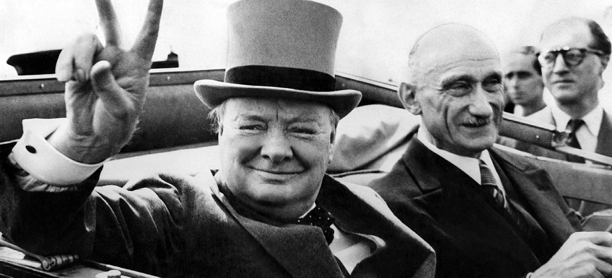

Here is one paragraph for this assignment. Apple ComputerI don't know what else to right, so here is some Churchill: We shall go on to the end, we shall fight in France, we shall fight on the seas and oceans, we shall fight with growing confidence and growing strength in the air, we shall defend our Island, whatever the cost may be, we shall fight on the beaches, we shall fight on the landing grounds, we shall fight in the fields and in the streets, we shall fight in the hills; we shall never surrender, and even if, which I do not for a moment believe, this Island or a large part of it were subjugated and starving, then our Empire beyond the seas, armed and guarded by the British Fleet, would carry on the struggle, until, in God's good time, the New World, with all its power and might, steps forth to the rescue and the liberation of the old.
In that previous paragraph, British was the italic word. This paragraph is in red now, so here is another speech. This time, it is by Roosevelt: Yesterday, December 7, 1941—a date which will live in infamy—the United States of America was suddenly and deliberately attacked by naval and air forces of the Empire of Japan. The United States was at peace with that nation, and, at the solicitation of Japan, was still in conversation with its government and its emperor looking toward the maintenance of peace in the Pacific. Indeed, one hour after Japanese air squadrons had commenced bombing in the American island of Oahu, the Japanese ambassador to the United States and his colleague delivered to our secretary of state a formal reply to a recent American message. While this reply stated that it seemed useless to continue the existing diplomatic negotiations, it contained no threat or hint of war or armed attack.
This is now the final paragraph. This time there will be no speech. でもね、これしゃべれますかな？That isn't bold, but THIS is! I don't want to search for any more speeches right now, so I am done with that.

| Name | Gender | Age |
|---|---|---|
| Karl | Male | 52 |
| Natalie | Female | 48 |
| Maria | Female | 32 |